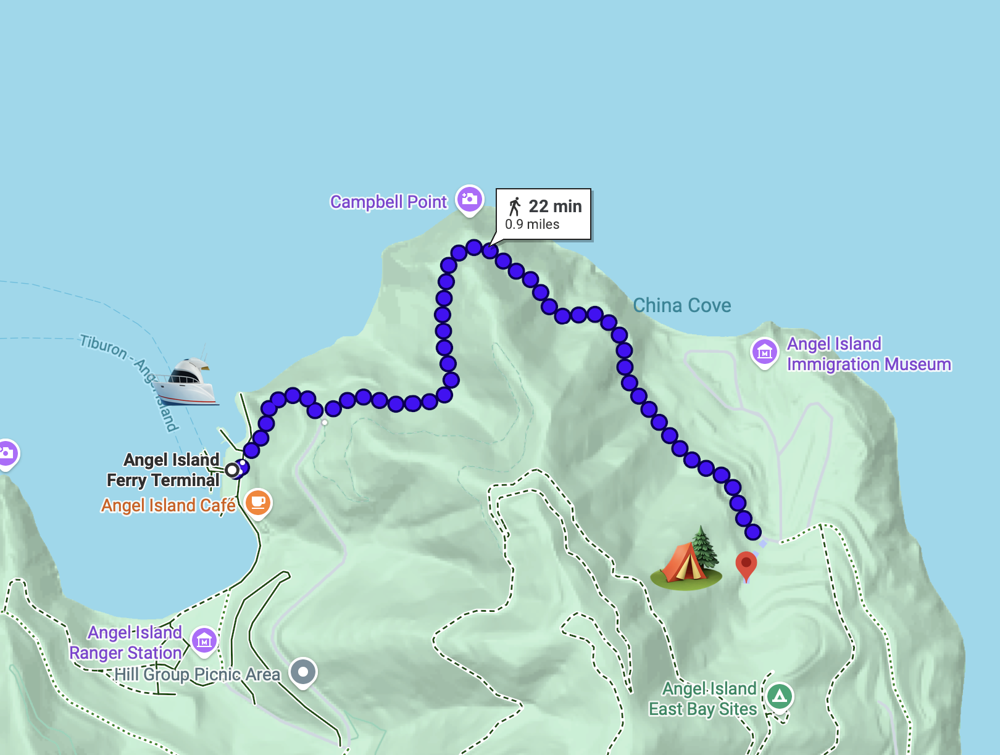

Calling all Bay Area parents with toddler(s)! I'm organizing a backpacking trip in San Francisco for March 2027.
If you love backpacking, but have been too afraid to do it with toddlers, this is the trip for you! I've done it, and it's a blast!
Angel Island is a great place to hike with toddlers. It's a relatively easy hike, and the views are beautiful. Weather should be relatively cool in March. We will depart from SF on Friday and return Sunday. There are multiple ferries to get to the island, and you do not need to meet us in San Francisco.
When: Friday, March 12, 2027 – Sunday, March 14, 2027
Where: Angel Island State Park
Who: All families with toddlers are welcome! (Must bring your toddler along)
How to get there: Ferry is the only way to get to the island. You may ferry with us from San Francisco, or join us from Tiburon and meet us at Angel Island ferry landing. Then, hike approximately 1 mile of relatively flat trail to the campsite.
How much: FREE! I've already paid for the campsite fees. You just need to cover your own ferry, gear, and food. I cannot carry anything for you...

No. This trip is meant for parents who love the outdoors and want to continue the tradition of backpacking with their toddlers. If you have camping experience, you will be fine. If you don't have any experience, I'd love to help you get started!
No, this is strictly for families with toddlers. Please bring your child(ren) along, and please come with them. This is not a babysitting trip.
There are some stairs in the beginning right after we depart Ferry Landing, and the hike is pretty flat on paved road. It is only 1 mile to the campsite, but if it takes 2 hours because of your toddlers, then it takes 2 hours.
Your own camping gear, food, water, and toddler essentials (diapers, formulas, etc.). Ferry tickets are also on you. I cannot carry anything for you, my children are already too heavy...
Yes, campsite fees are already covered. You only pay for your ferry, gear, and food. I do not want to make any money doing this. I am only here to build a community.
The biggest thing is once the last ferry leaves the island, we are stuck there (unless there's a real emergency). In terms of weather, it should be relatively cool in March. There are some coyotes that live there, so we will need to be diligent about storing scented items like food and other baby products.
There is a vault toilet (with toilet paper) at camp, and potable water is available. There are also food storage boxes at camp. On island, there's a small shop at Ferry Landing, but from my experience, the opening hours are not very predictable (highly dependent on the tourists).
There are rangers that live on the island that may be able to help, and depending on the situation, there may be a way to get off the island (never tried).
No. You can ferry with the group from San Francisco, or meet us at the Angel Island ferry landing after taking the ferry from Tiburon.
No. You can just stay for one night on either Friday or Saturday night. You can also leave early if for whatever reason you aren't comfortable staying the 2nd night. And we will do the same as well.
March is usually cool, but plans may change if conditions look unsafe. I can update the group if we need to adjust. Usually, I cancel trips when rain is in the forecast.
Please fill out the contact form below, I will need to do a soft background check (of your LinkedIn or social media profile) for the safety of the group. Once this is done, I will add you to our group chat and we can coordinate from there!
I don't have a sign up form here, so please just fill out the contact form below to get in touch!